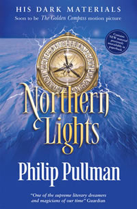
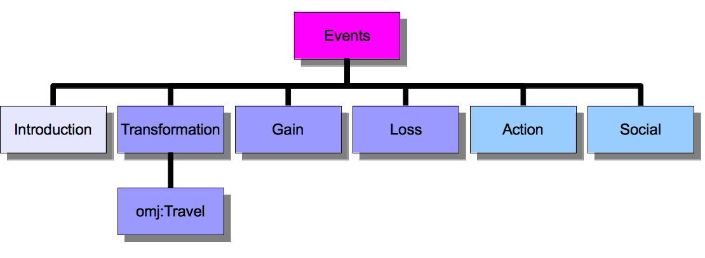

Blog
‘Like learning to read an alethiometer’: Rethinking the construction of the witnesses’ narratives

http://www.philip-pullman.com/pages/content/index.asp?PageID=51
Earlier this month, I met with Faith Lawrence and Osman Hankir of the Digital Humanities Department at King’s College London. The aim of the meeting was to acquaint me with the necessary understanding, framework and tools to begin to apply an ontological framework to the William Cragh text. This will ultimately form the basic structure for the usability and ‘searchability’ of the project website, the very basis (as I currently understand it) for the users’ experience.
Well, I thought that I had done my preparation well. I had taken two of the nine witness statements as samples and broken them down into the very smallest narrative elements from which they are composed. I had then organised into three tiers of ‘granularity’:
- key events which I see becoming the main features of the timeline through which users will be able to explore the text;
- events and descriptions which are shared by the majority, if not all of the nine witnesses;
- finally those detailed observations or recollections which are more or less unique to the witness in question.
How wrong I was! It would appear that quite a different analytical approach is actually required when it comes to constructing a narrative ontology, challenging me to rethink and reclassify everything I thought I knew and understood about how the story of William Cragh’s miracle is narrated.
It all begins with a construction like this:

Courtesy of Faith Lawrence at Ontomedia: http://www.contextus.net/ontomedia
Each and every event which occurs in the text needs to be classified in accordance with one of the above categories. Therefore, William being led to the gallows becomes an event-type ‘travel’; his hanging, event-type ‘violence’, sub-category ‘capital punishment’, sub-sub-category, ‘hanging’; the news of his death, event-type ‘transformation’ (as in the transfer of knowledge from individual to individual); the prayers said both in the castle and in the burgesses house become two instances of event–type, ‘social’ (the prayers being a communal entreaty), and so on and so forth.
By the end of our meeting, the new logic-construct and organisational principles were beginning to make sense. However, it still feels a little like learning to read one of Philip Pullman’s Alethiometers, with all the different potential levels of meaning hidden behind the first carved image denoting the top most obvious meaning of the categorisation. The difficulty is twofold: firstly, I have to definitively categorise narrative elements which I would normally only discuss and talk around, suggesting links and similarities. Secondly, I must to slot the specifics of my text into a general structure which could work for all texts. The results however, should be extremely interesting. In marking up the text in such defined terms, the resulting ontology created by the computer will no doubt be very different to the way in which I have interpreted and presented the text.
I am sure, like Lyra, as I practice, it will become second nature (at least that’s what I’m hoping). For now, I need to start dividing up the events in each witness statement, classifying its type, noting the subject and object of the incident, together with its location and all involved parties. From this, Eleonora, Osman and Faith will then begin to work the magic, by drawing out the information, the links, the resonances, and creating something that will allow the text to be explored in a whole new way.
Şħȧřḗ ǿƞ Ŧẇīŧŧḗř Şħȧřḗ ǿƞ Ƒȧƈḗƀǿǿķ